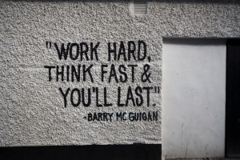

Well, I just turned on Facebook for a few minutes and interestingly found a link "Is it too late to start programming at 17 if you want to be a top programmer?" pointing to a post on Quora! I read it.
And, that's something really awesome!
Believe me, it's very essential in life to keep working towards your goals, you should always keep on moving. We should always do things which motivate us! Do, what we actually love to do.
The first answer to this question is by Don Pinkus. He was an Engineer at Facebook and now working on his own project. You can read his full story here.
You know what? It doesn't matter if you're working hard, put in your hundred percent; but nothing seems to move at all. Hard work is never wasted. One day or the other, you'll surely see the results. But they would be reflected only when you 'put' in something.
Simply sitting back and relying on destiny to give you something isn't and shouldn't be an option. You would only yield results when you put in 'efforts'.
Please read that timeline given by Don Pinkus, how he improved, how he worked upon his skills, how he never gave up and even resigned from his job at Facebook to work on his project! That's certainly we should all do! Follow our passion.
Giving up should never be an option. Certain things might work for you; certain might not. But it's very essential to keep on moving. And if you follow your passion, actually do what you love, trust me, there would be no looking back!
You would be always enjoying your work! Even 'master' was once a 'beginner'. So, how he became master now?
Answer is quite simple, by keep on working and never giving up! We always have to start somewhere and at beginning we'll come up with really terrible things, really bad ideas, work which would be 'trash' to everyone else. But that's how you improve. Criticism should be always taken as a positive thing. It should be something to help you in shaping yourself. Improving upon yourself.
One thing to remember:
A College Degree is important but so is common sense. The world is full of Self-Taught Geniuses and Educated Fools.
-Michael Baisden
In the end, there's no need to compare yourself with anyone, just try to be a better person than what you were yesterday. Keep working hard and never give up!
PS: For programmers, Don Pinkus have certain suggestions in his post, you can read it!
Comments !